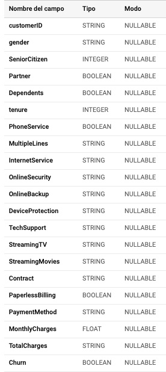
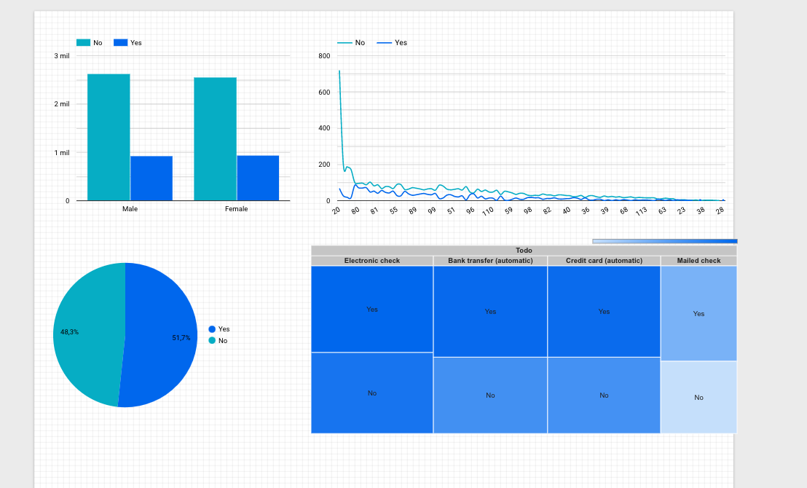
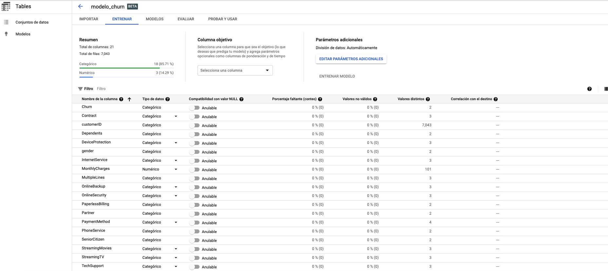

Toca aceptar algo!! La gente de google AI esta logrando grandes avances en todas sus herramientas de AutoML, pero en terminos generales en la plataforma de Google Cloud Platform y sobre ello quiero hablarles en esta entrada.
De antemano, lo que aquí comparto es desde mi experiencia de uso, al rededor de los últimos dos años, principalmente en el desarrollo de Ingeniería de datos con la joya de la corona Bigquery, a la par de contarles un poco de mi experiencia de uso con AutoML.
La plataforma de GCP esta diseñada para trabajar en varios frentes :
Creación de máquinas virtuales: Como producto Google ofrece Compute Engine, conas carácteristicas importantes a anotar:
Otro ejemplo sería el de Kubernetes, con lo cual se garantiza el trabajo bajo clusters y comunicación de diferentes nodos. En este punto hay una ventaja y es que si cuentas con cierta experiencia puedes hacer procesos de comunicación lógicos (literalmente), los cuales podran generar ahorros en el consumo de dicho servicio
Storages de Nube: Dado el periodo de Big Data y en especial la necesidad de procesamiento de la misma , el Cloud Storage es muy útil para almacenar grandes cantidades de datos y dada la ventaja que tiene la elasticiadad del almacenamiento hace este storage una herramienta increíble para todos aquellos que nos gusta scrapear o tener set de datos extensos.
BigQuery : Es un almacén de datos super poderoso que permite desarrollar análisis de la información escalable basado en consultas tipo SQL. BigQuery se caracteriza por :
DataFlow, para el procesamiento unificado de datos
Y por último ,
Para el ejercicio de hoy, exploraré la base de datos de churn de Kaggle. El objetivo final de este set de datos es poder construir un modelo de clasificación y con base a ello entender un poco las razones de la deserción.
la query que utilice para extraer y modificar los datos es la siguiente:
SELECT * except (MonthlyCharges, Churn,SeniorCitizen),
cast(MonthlyCharges as INT64) as MonthlyCharges,
case when Churn =false then 'No'
when Churn = true then 'Yes'
when Churn IS NULL THEN NULL
else 'other' END AS Churn,
case when SeniorCitizen=0 then 'No'
when SeniorCitizen=1 then 'Yes'
when SeniorCitizen IS NULL THEN NULL
else 'other' END AS SeniorCitizen,
from bit01-306604.bases_de_prueba.tabla_churnMientras el full de labels de la base es la siguiente:

Dado que es bueno ensuciar un poco la data, dejando la variable street para ver como es la evaluación de los modelos que genera AutoML.No voy a detenerme mucho en el EDA de estos datos, ya que solo tengo cuatro dudas
El resultado es el sigiuente :

Una vez entendido lo anterior paso a contruir un modelo de regresión lógistica para entender y predecir el churn.
Una vez se carguen los datos (proceso que puede demorar un poco), toca definir las siguientes condiciones :

Por default voy a dejar el siguiente pipeline:
Los resultados fueron los siguientes :
Procesadores Virtuales que permiten estabilidad en el procesamiento de los datos.↩︎